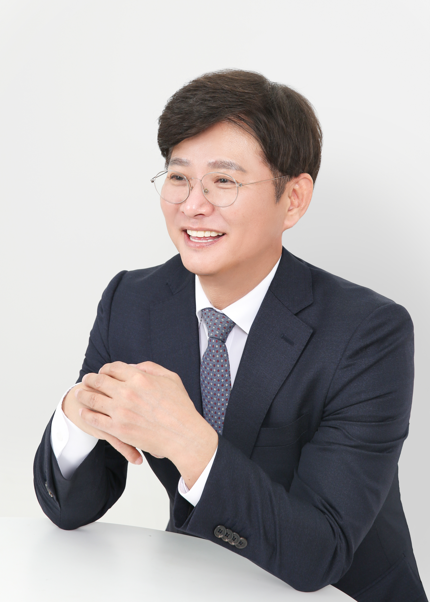

제11대 총장선거
Beyond Seoul,Above Globe,미래를 선도하는 시대(市大)
남진
서울시립대학교 제11대 총장예비후보자
도시과학대학 도시공학과 교수

01 / INTERVIEW
인터뷰 영상
[인터뷰 소개]
영상 준비 중
준비 중
[인터뷰 제목]
[인터뷰 소개]
영상은 등록 후 제공됩니다.02 / PRIORITIES
핵심 과제
[핵심 과제 소개]
03 / PLEDGES
공약
[공약 안내]
04 / ROADMAP
4년 로드맵
[로드맵 소개]
05 / ACHIEVEMENTS
주요 업적
[주요 업적 소개]
06 / DOWNLOADS
파일 받기
[자료 안내]